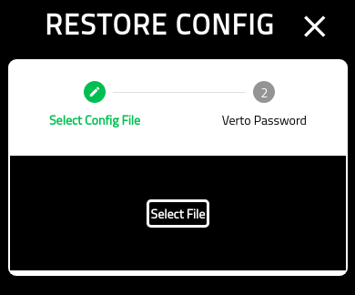
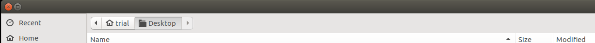
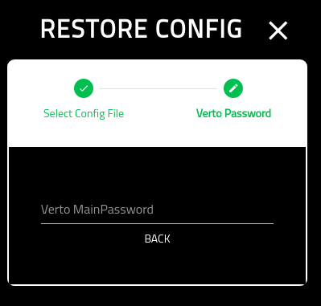

Restore Verto Config¶
About¶
This page provides details on using the restore config page.
Choose File¶
On the first panel, you must select the file from which you wish to restore Vero.
Click the ‘SELECT FILE’ button to choose the file.
You will be provided with a system file explorer to choose the file.
Verto Password¶
On the final screen you must put in your Verto password.
Note that this is the password of the config you are restoring. It may be different than the one you are currently using.
Once completed, you will be redirected to the Settings screeen.